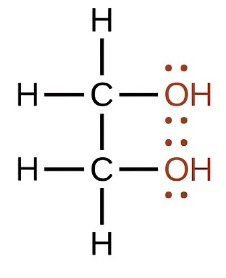
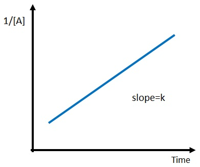

Press Ctrl-Z to toggle the answers & Ctrl-x to toggle the solutions.
Final Exam Study Guide
Mr. Alder
Jul 26, 2023
name: ______________________________________
1) Choose the substance with the lowest ΔHvap.
A) CH4*
B) OF2
C) NH3
D) KF
KF is an ionic compound. Ionic bonds are stronger than intermolecular bonds, so it will have the highest ΔHvap. NH3 can hydrogen bond, thus would have the second highest ΔHvap. OF2 is polar (dipole-dipole forces), thus would have the third highest ΔHvap. CH4 is non-polar (only London dispersion forces), thus would have the lowest ΔHvap.
2) Which of the following would you expect to have the lowest surface tension?
A) CH3CH2CH2CH2CH2CH3
B) CH3CH2CH2CH2CH3*
C) CH3CH2CH2CH2CH2CH2CH3
D) CH3CH2CH2CH2CH2CH2CH2CH3
The shortest carbon chain will have the smallest London dispersion forces, thus the lowest surface tension.
3) Which of the following statements is TRUE?
A) Particles move to a lower potential energy when they form bonds*
B) Hydrogen bonding is generally stronger than covalent bonds
C) Increasing the temperature of a liquid generally causes it to become a solid
D) Breaking bonds releases energy
It is true that particles move to a lower potential energy when they form bonds. Ionic and covalent bonds are stronger than intermolecular forces. Energy is required to break bonds, energy is not released when bonds are broken. Generally speaking, increasing pressure will cause a chemical to go from gas to liquid to solid (the exception being chemicals where the solid has a lower density than the liquid). Increasing temperature will cause a chemical to go from gas to liquid to solid.
4) Which of the following has the lowest viscosity?
A) Br2*
B) CH3CH2CH2OH
C) H2O
D) IF5
Br2 has the lowest viscosity, because it has the lowest intermolecular forces (only London dispersion forces). H2O and CH3CH2CH2OH can hydrogen bond. IF5 has dipole-dipole forces because it is an asymmetrical shape (square pyramidal).
5) What is the main reason why the boiling point of HF is much higher than that of HCl?
A) HCl can hydrogen bond whereas HF cannot
B) HF can hydrogen bond whereas HCl cannot*
C) HF has dipole-dipole forces whereas HCl does not
D) HF has stronger London dispersion forces than HCl
HF has a hydrogen attached to a N, O, or F, so it can hydrogen bond whereas HCl does not, so it cannot hydrogen bone. Hydrogen bonding gives HF a higher boiling point.
6) In which of the following figures is the adhesive force equal to the cohesive force?
A) The image labeled A*
B) The image labeled B
C) The image labeled C
D) None of the above.
When adhesive force is greater than the cohesive force the fluid will have a greater attraction to the side of the tube as it does other molecules in the fluid, so it will cause the meniscus to curve upwards on the sides, thus image B is the answer.
7) Place the following substances in order of increasing vapor pressure at a given temperature. SF6 SiH4 SF4
A) SF4 < SF6 < SiH4*
B) SiH4 < SF6 < SF4
C) SF6 < SiH4 < SF4
D) SF6 < SF4 < SiH4
SF4 is see saw shaped, so it is polar and has the lowest vapor pressure. SF6 is octahedral and SiH4 is tetrahedral, which are symmetrical shapes, so they are non-polar. However SF6 is much larger, thus will have more London dispersion forces, and a lower vapor pressure.
8) Which of the following increases the rate of vaporization?
A) Strong intermolecular bonds
B) Increasing the surface area*
C) Decreasing temperature
D) Decreasing the surface area
Increasing the surface area, weak intermolecular bonds, or increasing the temperature will lead to an increased rate of vaporization.
9) Using the phase diagram below, what phase transition would occur if H2O was heated from 7.1°C to 400 (2 sf)°C at 50 atm?
A) Melting
B) Sublimation
C) Vaporization (boiling)*
D) Condensation
At 50 atm and 7.1°C the water would be a liquid, but at 50 atm and 400 (2 sf)°C it would be a gas. So the phase transition is vaporization (boiling).
10) Which of the following 3 alkane isomers would you expect to have the lowest boiling point?
A) Isopentane
B) Neopentane*
C) Pentane
D) Since they are isomers, they will have the same boiling point.
Neopentane is the most branched alkane, so it will have the least surface area interacting for London dispersion forces. Thus it will have the lowest intermolecular forces and the lowest boiling point.
11) Identify the place which has the highest boiling point of water.
A) Denver, Colorado, 5280 feet
B) New Orleans, sea level
C) Death Valley, 282 feet below sea level*
D) Mt. Everest, 29,035 feet
The highest boiling point will be where the atmospheric pressure is the highest. Atmospheric pressure will be the highest at the lowest elevation.
12) (SLO 1.2) In methane CH4, which intermolecular forces are present?
A) Only dipole-dipole and ion-dipole forces are present
B) Only London dispersion*
C) London dispersion and hydrogen bonding
D) London dispersion and dipole-dipole
methane CH4 is nonpolar thus only London dispersion forces are present.
13) Determine the normal boiling point (at 760 mm Hg) of a substance whose vapor pressure is 53.9 mm Hg at 48.2°C and has a ΔHvap of 33.3 kJ/mol.
A) 49.8 K
B) 322 K
C) 408 K*
D) 265 K
To determine the normal boiling point of a substance, we need to find the temperature at which its vapor pressure is equal to the atmospheric pressure at 760 mm Hg.
Given: T1: 48.2°C T2: ? P1: 53.9 mm Hg P2 = 760 mm Hg (normal pressure) ΔHvap = 33.3 kJ/mol R = gas constant (8.3145 J/mol·K)
To calculate the normal boiling point, we can use the Clausius-Clapeyron equation:
ln(P2/P1) = -(ΔHvap/R) * (1/T2 - 1/T1)
Converting the given values to K and J: T1: 48.2°C + 273.15 = 321 K ΔHvap = 33.3 kJ/mol = 33.3 × 1000J/1 kJ = 3.33x104 J/mol
Simplifying: ln(14.1) = -4010 K * (1/T2 - 1/321 K)
Now, let's solve for T2: -0.000661 K = (1/T2 - 1/321 K) -0.000661 1/K = 1/T2 - 1/321 K -0.000661 1/K + 1/321 1/K = 1/T2 0.00245 1/K = 1/T2
Taking the inverse of both sides: 408 K = T2
14) How much energy is required to heat 30.8 g H2O from a liquid at 70.9°C to a gas at 120°C? ΔHvap = 40.7 kJ/mol Cliquid = 4.184 \( \frac{J}{g°C} \) Cgas = 2.01 \( \frac{J}{g°C} \) Csolid = 2.09 \( \frac{J}{g°C} \) Tmelting = 0°C Tboiling = 100°C
A) 74.6 kJ*
B) 1260 kJ
C) 5060 kJ
D) 86.1 kJ
To calculate the energy required to heat water from a liquid at 70.9°C to a gas at 120°C, we need to consider the following steps:
Heating the liquid water from its initial temperature to its boiling point.
Vaporizing the liquid water at its boiling point to gas.
Heating the water vapor from it's boiling point to 120°C.
Step 1: Heating the liquid water First, we calculate the energy required to heat the liquid water from 70.9°C to its boiling point at 100°C.
q1 = m x Cliquid x ΔT1
where: q1 = energy required (in joules) m = mass of water (in grams) Cliquid = specific heat capacity of liquid water (in J/g-°C) ΔT1 = change in temperature (final temperature - initial temperature) Cgas = specific heat capacity of liquid water (in J/g-°C)
Given: m = 30.8 g Cliquid = 4.184 J/g-°C ΔT1 = 100°C - 70.9°C = 29.1°C
q1 = (30.8 g) x (4.184 J/g-°C) x (29.1°C) q1 ≈ 3750 J x \( \frac{1 kJ}{1000 J} \) = 3.75 kJ
Step 2: Vaporizing the liquid water Next, we calculate the energy required to vaporize the liquid water at its boiling point.
q2 = n x ΔHvap
where: q2 = energy required (in joules) n = number of moles of water ΔHvap = enthalpy of vaporization (in J/mol)
To calculate the number of moles of water, we use the molar mass of water (H2O), which is approximately 18.02 g/mol.
mol = 30.8 x \( \frac{1 mol H_2O}{18.02 g H_2O} \) ≈ 1.71 mol
Given: ΔHvap = 40.7 kJ/mol
q2 = (1.71 mol) * (40.7 kJ/mol) ≈ 69.6 kJ
Step 3: Heating the water vapor, we calculate the energy required to heat the water vapor from 100°C to 120°C.
q3 = m x Cliquid x ΔT2
where: q3 = energy required (in J) m = mass of water (in grams) Cgas = specific heat capacity of liquid water (in J/g-°C) ΔT1 = change in temperature (final temperature - initial temperature)
Given: m = 30.8 g Cliquid = 2.01 J/g-°C ΔT1 = 120°C - 100°C = 20.0°C
q3 = (30.8 g) x (2.01 J/g-°C) x (20.0°C) q3 ≈ 1240 J x \( \frac{1 kJ}{1000 J} \) = 1.24 kJ
Total energy required: The total energy required is the sum of q1, q2 and q3.
Total energy = q1 + q2 + q3 ≈ 3.75 kJ + 69.6 kJ + 1.24 kJ
Total energy ≈ 74.6 kJ
15) The enthalpy of solution for a compound is -99 kJ/mol, and the enthalpy of hydration for the compound's ion X- is -470 kJ/mol. Calculate the lattice energy (in kJ/mol) of the compound.
A) -569 kJ/mol
B) 371 kJ/mol*
C) 569 kJ/mol
D) -371 kJ/mol
To solve this problem, we can use the following equation:
ΔHsolution = ΔHlattice + ΔHhydration
Where: ΔHsolution = Enthalpy of solution ΔHlattice = Lattice energy ΔHhydration = Enthalpy of hydration
We are given: ΔHsolution = -99 kJ/mol ΔHhydration = -470 kJ/mol
Rearranging the equation, we can solve for ΔHlattice:
16) (SLO 1.7) What is a solution containing more than the maximum equilibrium amount of solute at a given temperature called?
A) An unsaturated solution
B) A supersaturated solution*
C) A dilute solution
D) A saturated solution
E) None of the above.
An unsaturated solution contains less than the maximum amount of solute at a given temperature A supersaturated solution contains more than the maximum amount of solute at a given temperature A saturated solution contains the maximum equilibrium amount of solute at a given temperature
17) (SLO 1.4) An aqueous solution is 0.552 m (molality) NaI (149.9 g/mol). What is the molarity (M) of the solution if the density of the aqueous solution is 1.26 g/mL?
A) 0.00831 M
B) 0.642 M*
C) 0.696 M
D) 0.510 M
A solution is 0.552 m NaI (149.9 g/mol). What is the molarity (M) of the solution if the density of the solution is 1.26 g/mL? 0.552 mol NaI x (149.9 g NaI)/(1 mol NaI) = 82.7 g NaI 1 kg water x 1000 g/1 kg = 1000 g water 1000 g water + 82.7 g NaI = 1080 g solution 1080 g solution x 1 mL/1.26 g = 859 mL 859 mL x 1 L/1000 mL = 0.859 L molarity (M) = 0.552 mol NaI/ 0.859 L = 0.642 M
18) Which of the following compounds will be most soluble in methanol (CH3OH)?
A) Trimethylamine
B) Hexane
C) Acetone
D) Ethandiol *
E) None of the above.
The compounds will be most soluble in methanol (CH3OH) will be a compound that can also hydrogen bond. Of the choices, only Ethandiol can hydrogen bond, so Ethandiol is the answer.
19) Which of the following have a great impact on the solubility of a solid in a liquid?
A) Atmospheric pressure only
B) Temperature only*
C) Temperature and atmospheric pressure
D) None of the above.
Only temperature has any significant impact on the solubility of a solid (increasing the temperature increases the solid's solubility). Both temperature and partial pressure of the gas would have a significant impact on the solubility of a gas (increasing the temperature decreases the solubility of a gas, and increasing the partial pressure of the gas increases the solubility of a gas).
20) What is the mol fraction of ethanol, C2H5OH (46.07 g/mol), in a solution of 79.9 g of ethanol and 600 g of water (18.02 g/mol)?
A) 0.950
B) 0.0521
C) 0.0495*
D) 19.2
79.9 g ethanol x (1 mol ethanol / 46.07 g ethanol) = 1.73 mol ethanol 600 g water x (1 mol water / 18.02 g water) = 33.3 mol water Total moles solution = 1.73 mol ethanol + 33.3 mol water = 35.0 mol mole fraction of ethanol = 1.73 mol ethanol / 35.0 mol = 0.0495
21) (SLO 1.3) The Henry’s law constant for hydrogen gas in water at 20ºC is 8.1 x 10-4 M/atm. When the partial pressure of hydrogen above a sample of water is 0.668 atm, the concentration of hydrogen in the water is ______ M.
A) 825
B) 0.00121
C) 0.000541*
D) 5.41
Henry's law relates the concentration of a gas in a liquid to its partial pressure above the liquid. The equation for Henry's law is:
C = k * P
where: C is the concentration of the gas in the liquid (in Molarity, M) k is the Henry's law constant for the specific gas-solvent system (in M/atm) P is the partial pressure of the gas above the liquid (in atm)
Given: Henry's law constant (k) for hydrogen gas in water = 8.1 x 10-4 M/atm Partial pressure of hydrogen (P) = 0.668 atm
Using Henry's law, we can calculate the concentration of nitrogen gas in the water (C):
C = (8.1 x 10-4 M/atm) * (0.668 atm) C ≈ 0.000541 M
22) A sealed container contains 0.606 L of water with an atmosphere of oxygen gas. What is the concentration of O2 in the water if the external pressure is 4.32 atm given that kH for O2 is 1.66 × 10-6 M/mm Hg at this temperature?
A) 7.17x10-6 M
B) 9.44x10-9 M
C) 3420 M
D) 0.00545 M*
Step 1: Convert the external pressure from atm to mm Hg: 4.32 atm x 760 mmHg / 1atm ≈ 3280 mm Hg
Step 2: Calculate the concentration of O2 in water using Henry's law: Concentration of O2 = kH * Partial pressure of O2 Partial pressure of O2 = External pressure
Concentration of O2 = 1.66 × 10-6 M/mm Hg x 3280 mm Hg mm Hg Concentration of O2 ≈ 0.00545 M
23) What mass (in g) of NH3 (17.03 g/mol) must be dissolved in 500. g of methanol (32.04 g/mol) to make a 0.772 m solution?
A) 0.386 g
B) 12.4 g
C) 6.58 g*
D) 0.205 g
What mass (in g) of NH3 (17.03 g/mol) must be dissolved in 500. g of methanol (32.04 g/mol) to make a 0.772 m solution? 0.500 Kg solution x (0.772 molsolute / 1 Kg solvent) X (17.03 g solute / 1 mol solute) = 6.58 g
24) Which of the following would result in an exothermic reaction?
A) The products and reactants have equal strength bonds
B) The products have stronger bonds than the reactants*
C) The products have weaker bonds than the reactants
D) The products are at a higher potential energy than the reactants
Exothermic: Products have stronger bonds/reactants have weaker bonds The product is at a lower potential energy
Endothermic: Products have weaker bonds/reactants have stronger bonds The product is at a higher potential energy
25) Determine the vapor pressure of a solution at 25°C that contains 61.9 g of glucose (C6H12O6) (180.2 g/mol) in 300 mL of water (18.02 g/mol). The vapor pressure of pure water at 25°C is 23.8 torr, and the density of water is 1.00 g/mL.
A) 0.491 torr
B) 1150 torr
C) 23.3 torr*
D) 0.481 torr
61.9 g of glucose (C6H12O6) x (1 mol glucose / 180.2 g glucose) = 0.344 mol glucose 300 mL water x (1.00 g water/ 1 mL water) x (1 mol water / 18.02 g water) = 16.6 mol water Total moles solution = 0.344 mol glucose + 16.6 mol water = 17.0 mol Xwater = 16.6 mol water / 17.0 mol = 0.980 Psolution = Xwater x Ppure water = 0.980 x 23.8 torr = 23.3 torr
26) How many moles of NaI are contained in 364 g of water in a 0.261 m NaI solution?
A) 0.990 mol
B) 95.0 mol
C) 0.0950 mol*
D) 14.2 mol
364 g water x (1 Kg / 1000 g)= 0.364 Kg 0.364 Kg of water X (0.261 mol NaI / 1 Kg water) = 0.0950 mol
27) Determine the Henry's law constant for an unknown gas in water at 25°C if the unknown gas at a pressure of 0.0110 atm produces a solution with a concentration of 2.36 M.
A) 0.649 M/atm
B) 215 M/atm*
C) 0.0260 M/atm
D) 0.00466 M/atm
S = Kh * p Kh = S/p Kh = 2.36 m/0.0110 atm = 215 M/atm
28) A 3.16 L sample of an aqueous solution contains 0.127 g of sodium ions. Determine the concentration of sodium ions in ppm if the density of the solution is 1.09 g/mL.
A) 36.9 ppm*
B) 3.69x104 ppm
C) 0.0000369 ppm
D) 41.0 ppm
3.16 L solution x (1000 mL / 1 L) x (1.09 g / 1 mL) = 3440 g solution
PPM = mass of sodium ions/mass of solution x 106 = 0.127 g of sodium ions / 3440 g solution x 106 = 36.9 ppm
29) Which step is always the rate-determining step in a multi-step reaction?
A) The slowest step*
B) The last step
C) The first step
D) The fastest step
The slowest step is always the rate determining step.
30) (SLO 2.4) What rate is bimolecular?
A) Rate = K[A][B]*
B) Rate = K[A][B][C]
C) Rate = K[A][B]2
D) Rate = K[A]3
Adding the exponents (orders) of the concentrations for K[A][B] gives 2 so the reaction would be bimolecular
31) What generally happens with a reaction when the temperature is increased?
A) The rate constant (K) increases, causing the rate of the reaction to decrease
B) The rate constant (K) decreases, causing the rate of the reaction to decrease.
C) The rate constant (K) increases, causing the rate of the reaction to increase*
D) The rate constant (K) decreases, causing the rate of the reaction to increase
If you think about a generic rate equation such as Rate = k[A][B], anything that affects the rate, that isn't a change in concentration of A or B must cause a change in k. Since an increase in temperature increases the rate of a reaction, it must be because it increases the value of k.
The effect of temperature on the equilibrium constant is shown in the Arrhenius equation. k = \( Ae^{\frac{-E_a}{RT}} \)
32) What is the order of the reaction represented by the graph below?
A) zeroth
B) second
C) third
D) first*
First order
Second order
Third order

33) Using the balanced chemical equation below, calculate the rate of rate reaction with a rate in change of concentration of NH3 equal to -11.3 M/s.
2 NH3 (g) + 3 Cl2 (g) → N2 (g) + 6 HCl (g)
A) 22.6 M/s
B) 11.3 M/s
C) 5.65 M/s*
D) 128 M/s
Rate = \( -\frac{1}{2}\frac{Δ[NH_3]}{Δt} \) = \( -\frac{1}{3}\frac{Δ[Cl_2]}{Δt} \) = \( +\frac{Δ[N_2]}{Δt} \) = \( +\frac{1}{6}\frac{Δ[HCl]}{Δt} \) Substitute in -11.3 M/s for change of concentration of NH3 Rate = -1/2 11.3 M/s Rate = 5.65 M/s
34) Which of these two pathways represents the uncatalyzed pathway?
A) A*
B) B
C) All of the above.
D) None of the above.
The uncatalyzed pathway will have a higher activation energy (Ea).
35) What are biological catalysts called?
A) Exfoliators
B) Inhibitors
C) Substrates
D) Enzymes*
Biological catalysts are called enzymes. Substrates bind to catalysts. Inhibitors slow the action of an enzyme.
36) (SLO 2.5) For a reaction that follows the general rate law, Rate = K[A][B]2, what will happen to the rate of reaction if the concentration of A is increased by a factor of 2?
A) The rate will increase by a factor of 2.0*
B) The rate will increase by a factor of 4.0
C) The rate will decrease by a factor of 1/2.0
D) The rate will decrease by a factor of 1/4.0
To solve this question, take the exponent (order) for A, and raise the factor (2) by that exponent. 21 = 2.0
37) Identify the statement that is true.
A) Rate constants are temperature dependent*
B) Catalysts increase the concentration of reactants thus increase the rate of a reaction
C) The rate constant decreases when temperature is increased
D) Catalysts increase the activation energy thus increasing the rate of a reaction
If you look at a generic rate law (rate = k[A][B]), anything that affects the rate, besides changes in concentration are accounted for in the rate constant. Since increasing temperature increases the rate of a reaction, it will do so by increasing the rate constant. The same is true for adding a catalyst. The affect temperature has on the rate constant is shown in the Arrhenius equation. So is the effect of a catalyst, because it lowers the activation energy (Ea). K = \( Ae^{\frac{-E_a}{RT}} \)
38) The decomposition of cyclopropane to propene is a first-order reaction that has a rate constant of 6.39x10-4 s-1. If the initial concentration of cyclopropane is 3.79 M, what is the concentration of cyclopropane after 35.5 s?
A) 3.70 M*
B) 3.77 M
C) 0.0860 M
D) 4.15 M
The integrate rate law for a first order reaction is \( ln\frac{[A]_t}{[A]_0} = -kt \) Taking the inverse log of both sides gives: \( \frac{[A]_t}{[A]_0} = e^{-kt} \), multiplying both sides by [A]0 gives: \( [A]_t = [A]_0 x e^{-kt} \) Plugging in 3.79 M for [A]0, 6.39x10-4 s-1 for K, and 35.5 s for t gives: [A]t = 3.79 M x e(-6.39x10-4 s-1 x 35.5 s) [A]t = 3.70 M
39) The following reaction is a second order reaction. If the rate constant is 0.671 M-1s-1, and the original concentration of O3 is 0.909x10-2 M, then what is the half-life?
2 O3 (g) ➞ 2 O2 (g)
A) 0.00677 s
B) 1.03 s
C) 164 s*
D) 73.8 s
Since this is a second order reaction, the half-life equation is \( \frac{1}{K[A]_0} = t_{1/2} \) Substituting in 0.671 M-1s-1 for K, and 0.909x10-2 M for [A]0 gives: t1/2 = 1/(0.671 M-1s-1 x 0.909x10-2 M) = 164 s
40) Which of the following expressions accurately depicts the rate of this reaction?
N2(g) + 3 H2(g) ➞ 2 NH3(g)
A) \( +\frac{Δ[NH_3]}{Δt} \)
B) \( -\frac{1}{2}\frac{Δ[NH_3]}{Δt} \)
C) \( -\frac{1}{3}\frac{Δ[H_2]}{Δt} \)*
D) \( -\frac{1}{2}\frac{Δ[N_2]}{Δt} \)
You should be looking for an answer that shows a negative sign for reactants or positive for products. Also, the coefficient from the balanced chemical equation should be in the denominator. Rate =\( -\frac{Δ[N_2]}{Δt} \) = \( -\frac{1}{3}\frac{Δ[H_2]}{Δt} \) = \( +\frac{1}{2}\frac{Δ[NH_3]}{Δt} \)
41) (SLO 2.3) What is the overall order of the following reaction, given the rate law? 2 X + 4 Y ➞ 4 Z Rate = k[X]3[Y]2
A) 5*
B) 6
C) 2
D) 4
Ignore the chemical equation, and just add the exponents (orders) of the reactants. Rate = k[X]3[Y]2 3 + 2 = 5
42) What is are the units for the k in the following rate law. Rate = k
A) 1/(Ms) or M-1s-1
B) 1/(M3s) or M-3s-1
C) 1/s or s-1
D) M/s or Ms-1*
Based on the rate law (Rate = k), the overall order of the reaction is zeroth, so the exponents for units of the rate constant will add to 0. Since seconds is always to the -1 power, molarity will have to be to the +1 power. Thus M/s or Ms-1 is the answer.
43) (SLO 3.1) What is the equilibrium constant equation for the following reaction? 2 H2 (g) + O2 (g) ⇌ 2 H2O (g)
A) K = \( \frac{[H_2O]^2}{[H_2]^2[O_2]} \)*
B) K = \( \frac{[H_2][O_2]}{[H_2O]} \)
C) K = \( \frac{[H_2]^2[O_2]}{[H_2O]^2} \)
D) K = \( \frac{[H_2O]}{[H_2][O_2]} \)
The equilibrium constant expression is concentration of products (raised to their coefficients) over concentration of reactants (raised to their coefficients). K = \( \frac{[H_2O]^2}{[H_2]^2[O_2]} \)
44) (SLO 3.6) In a reaction mixture containing only products, what is the value of Qc?
A) \( \sqrt(2) \)
B) 0
C) ꝏ (infinity)*
D) 2
"Only products" would mean that the denominator in the Qc equation is zero. Thus the answer is ꝏ (infinity).
45) (SLO 3.5) Identify the change that will always shift the equilibrium to the right.
A) Increasing volume
B) Adding reactant*
C) Decreasing temperature
D) Adding product
Adding reactant will always shift the equilibrium to the right Removing reactant will always shift the equilibrium to the left Adding product will always shift the equilibrium to the left Removing product will always shift the equilibrium to the right Increasing pressure or decreasing volume will always shift the equilibrium to the side with lower moles of gas Decreasing pressure ore increasing volume will always shift the equilibrium to the side with higher moles of gas Increasing temperature will shift the equilibrium to the right in an endothermic reaction, but to the left in an exothermic reaction Decreasing temperature will shift the equilibrium to the left in an endothermic reaction, but to the right in an endothermic reaction
46) If Q (the reactant quotient) is less than the equilibrium constant, then which way will the reaction proceed more quickly?
A) In the forward direction*
B) In the reverse direction
C) All of the above.
D) None of the above.
If Q (the reactant quotient) is less than the equilibrium constant, then it means we have too little product (numerator) and too much reactant (denominator) to be at equilibrium. Since reversible reactions will always proceed to equilibrium, the reaction will have to proceed in the forward direction to produce more product, and use up some of the reactant.
47) In the reaction below, at equilibrium, the concentration of N2 is 0.450 M, and the concentration of H2 is 0.382 M. Determine the equilibrium concentration of NH3 (g). 2 N2 (g) + 6 H2 (g) ⇌ 4 NH3 (g) Kc = 3.49x103
A) 4.95 M
B) 2.20 M
C) 600. M
D) 1.22 M*
Kc = \( \frac{[NH_3]^4}{[N_2]^2[H_2]^6} \) = ([NH3]4)/(0.4502 x 0.3826) = 3.49x103 [NH3]4 = (0.4502 x 0.3826) x 3.49x103 [NH3]4 = 2.20 M4 [NH3] = 1.22 M
48) (SLO 3.2) The equilibrium constant is given for one of the reactions below. Determine the value of the missing equilibrium constant (Kc2). H2 (g) + I2 (g) ⇌ 2 HI Kc1 = 57.4 4 H2 (g) + 4 I2 (g) ⇌ 8 HI Kc2 = ?
A) 1.18x1014
B) 230.
C) 3.62x1034
D) 1.09x107*
Because the coefficients in the second equation are 4 times the coefficients in the first equation, Kc2 will be Kc1 raised to the 4 power.
49) (SLO 3.7) Consider the following reaction. Xe (g) + 2 F2 (g) ⇌ XeF4 (g)
A reaction mixture contains 5.52 atm of Xe, 6.94 atm F2. Once the reaction reaches equilibrium, the pressure of Xe is 4.38 atm. What is the equilibrium constant (Kp) for the reaction?
A) 0.0157*
B) 0.0689
C) -0.0157
D) 0.0315
R
Xe (g)
+ 2 F2 (g)
⇌ XeF4 (g)
I
5.52
6.94
0
C
-x
-2x
+x
E
4.38
6.94-2x
x
5.52 - x = 4.38 5.52 - 4.38 = x 2 x 1.14 = 2x 2.28 = 2x PXeF4 = 1.14 PF2 = 6.94 - 2x = 4.66 Kp = (1.14)/(4.38 x 4.662) Kp = 0.0120
50) Is the following reaction reactant or product favored? HBr (s) + H2O (l) ⇌ H3O+ (aq) + Br- (aq) Kc = 1.0x109
A) Reactant favored
B) Product favored*
C) All of the above.
D) None of the above.
When Kc is greater than 1, it is product favored, when Kc is less than 1 it is reactant favored. This is because Kc is essentially products over reactants. So a number greater than 1 indicates more products than reactants, whereas a number lower than 1 indicates more reactants than products.
51) (SLO 3.3) The Kp for the reaction below is 3.59 x 10-5 at 120°C. CO (g) + Cl2 (g) ⇌ COCl2 (g)
In an equilibrium mixture of the three gases, PCO = PCl₂ = 6.89 x 10-5 atm. The partial pressure of the product, phosgene (COCl2), is __________ atm.
A) 0.000132 atm
B) 1.70x10-13 atm*
C) 4.75x10-9 atm
D) 2.47x10-9 atm
Notice that these are already equilibrium values.
CO (g)
+ Cl2 (g)
⇌ COCl2 (g)
E
6.89 x 10-5
6.89 x 10-5
x
K = \( \frac{P_{COCl_2}}{P_{CO} x P_{Cl_2}} \)= x/(6.89 x 10-5)2 = 3.59 x 10-5 x = (3.59*10^-5) x (6.89 x 10-5)2 x = 1.70x10-13 [COCl2]eq = 1.70x10-13 atm
52) Once this reaction has reached equilibrium, which of the following changes would shift the equilibrium to the left? 2 SO2 (g) + O2 (g) ⇌ 2 SO3 (g), ΔH = -197.7 kJ
A) An increase in pressure
B) Removing product
C) An increase in temperature*
D) A decrease in volume
Since there are more moles of gas on the left side of the equation, an increase in volume (decrease in pressure) will shift the equilibrium to the left. Since the reaction is exothermic, an increase in temperature will shift the reaction to the left.
53) At equilibrium, which of the following are true?
A) The rate of the forward reaction is equal to the rate of the reverse reaction*
B) The rate constant of the forward reaction is equal to the equilibrium constant
C) The concentration of the reactants and products are equal
D) The reaction stops
The rate of the forward reaction is equal to the rate of the reverse reaction, which means that the concentration of the reactants and products will remain stable.
54) Is the following reaction reactant or product favored? AgCl (s) ⇌ Ag+ (aq) + Cl- (aq) Kc = 1.8x10-10
A) Reactant favored*
B) Product favored
C) All of the above.
D) None of the above.
When Kc is greater than 1, it is product favored, when Kc is less than 1 it is reactant favored. This is because Kc is essentially products over reactants. So a number greater than 1 indicates more products than reactants, whereas a number lower than 1 indicates more reactants than products.
55) Once this reaction has reached equilibrium, which of the following changes would shift the equilibrium to the right? 2 SO2 (g) + O2 (g) ⇌ 2 SO3 (g), ΔH = -197.7 kJ
A) Adding O2*
B) Removing O2
C) An increase in volume
D) A decrease in pressure
Adding reactants or removing products will shift a reaction to the right.
56) The reaction below has a Kp value of 3.73x10-3. What is the value of Kc for this reaction at 650 K? 4 A (g) + 3 B (g) ⇌ A4B3 (g)
A) 1.62x10-13
B) 1.14x10-9
C) 1.62x10-13
D) 8.59x107*
Kp = Kc(RT)Δn, solving for Kc: Kc = Kp/(RT)Δn = 3.73x10-3/(0.08206 L-atm/mol-K x 650 K)-6 Kc = [3.73*10^-3/((0.08206*650)^(1-4-3))]
57) Determine the pOH of a 0.00362 M LiOH solution.
A) 3.17
B) 11.6
C) 2.44*
D) 2.76x10-12
Since LiOH is a strong base, assume the concentration of LiOH is the concentration of OH-. pOH = -log[OH-] pOH = -log(0.00362) pOH = 2.44
58) (SLO 4.1) Which of the following is a Brønsted–Lowry acid?
A) CHCH
B) HClO2*
C) NH3
D) LiOH
E) All of the above.
You can tell HClO2 is a Brønsted–Lowry acid, by the H in the front of the formula. NH3 is a base. CHCH does not have an acidic hydrogen (the C-H bonds won't break). LiOH is a base.
59) (SLO 4.2) Which of the following is a Brønsted–Lowry base?
A) CHCH
B) HClO2
C) LiOH*
D) Cl2
E) None of the above.
HClO2 is an acid. Cl2 will not dissociate in water, and is not an acid or a base. CHCH does not have an acidic hydrogen (the C-H bonds won't break), and is not an acid or a base. LiOH is the only base.
60) Which of the following has the strongest conjugate base?
A) HBr
B) HC2H3O2*
C) HCl
D) HI
The weakest acid will have the strongest conjugate base. Out of all the choices, only HC2H3O2 is a weak acid.
61) (SLO 4.4) Calculate the pOH of a solution that contains 1.71x10-3 M H3O+ at 25°C
Oxyacids become stronger acids the more oxygens they have. Also, the more positively charged an acid is (least negatively charged), the stronger the acid will be.
63) If a solution has a pH of 4.57, then what is the hydronium (hydrogen) ion concentration at 25°C?
A) 0.0000269 M*
B) 9.43 M
C) -0.66 M
D) 3.72x104 M
E) None of the above.
[H+] = 10-pH [H+] = 10-4.57 [H+] = 0.0000269 M
64) Determine the pH in a 0.602 M HSO4- solution. The Kb of SO42- is 8.33 × 10-13.
A) 1.77
B) 1.10*
C) 12.9
D) None of the above.
Since HSO4- is a weak acid, we need a RICE table, and acid dissociation constant equation.
R
HSO4- ⇄
H+ +
SO42-
I
0.602
0
0
C
- x
+ x
+ x
E
0.602 - x
x
x
Ka = 10-14/8.33 × 10-13 = 0.0120 0.0120 = [H+][SO42-]/[HSO4-] 0.0120 = x2/(0.602 - x), small x assumption is not valid because 0.602/(1.2 × 10-2) = 50.2 0.0120 = x2/0.602 (0.602 - x) x (0.0120) = x2 0.00723 - 0.0120x = x2 0 = x2 + 0.0120x - 0.00723 x = 0.0792 pH = -log[H3O+] pH = -log(0.0792) pH = 1.10
65) (SLO 4.7) How many milliliters of 0.0874 M NaOH are required to titrate 15 mL of 0.162 M HBr to the equivalence point.
A) 27.8 mL*
B) 8.09 mL
C) 36.1 mL
D) 2.78 mL
15 mL x (1L/1000mL) x (0.162 mol/L) x (1 mol NaOH/1 mol HBr) x (1 L/0.0874 mol) x (1000 mL/1L) = 27.8 mL
66) If a solution has a hydroxide ion concentration of 2.79x10-7 M, then what is the pOH of the solution at 25°C?
A) 6.55*
B) -6.69
C) 7.45
D) 3.58x10-8
pOH = -log[OH-] pOH = -log(2.79x10-7) pOH = 6.55
67) Which of the following pKa values would correspond to the strongest acid?
A) pKa = 4.41
B) pKa = 5.78
C) pKa = 7.39
D) pKa = 1.65*
E) None of the above.
The lowest pKa corresponds to the strongest acid. Possibly the easiest way to remember this is that at the half-equivalence point pH = pKa. The strongest acid would have the lowest pH, thus the lowest pKa.
68) Determine the pH in a 0.931 M C6H5CO2H solution. The Ka of C6H5CO2H is 6.5 × 10-5.
A) 2.11*
B) 2.88
C) 0.00772
D) 4.22
Since C6H5CO2H is a weak acid, we need a RICE table, and acid dissociation constant equation.
R
C6H5CO2H ⇄
H+ +
C6H5CO2-
I
0.931
0
0
C
- x
+ x
+ x
E
0.931 - x
x
x
Ka = 6.5 × 10-5 = [H+][C6H5CO2-]/[C6H5CO2H] 6.5 × 10-5 = x2/(0.931 - x), small x assumption is valid because 0.931/(6.5 × 10-5) = 1.43x104 6.5 × 10-5 = x2/0.931 0.931 x 6.5 × 10-5 = x2 x = √(0.931 x 6.5 × 10-5) [H3O+] = x = 0.00772 M
pH = -log[H3O+] pH = -log(0.00772) pH = 2.11
69) Which of the following is the strongest Lewis acid (best at giving up H+ or binding OH-)?
A) Na+
B) K+
C) Li+
D) HF*
The strongest acid, will have the weakest conjugate base. The conjugate bases of Na+, Li+, and K+ are all strong bases (NaOH, LiOH, and KOH). Thus the answer is HF.
70) If a solution has a pOH of 12.5, then what is the hydronium (hydrogen) ion concentration at 25°C?
71) How many moles of Pb3(PO4)2 can be dissolved in 4.00 L of solution. Ksp (Pb3(PO4)2) = 1.0x10-54.
A) 2.49x10-11 moles*
B) 1.83x10-9 moles
C) 3.85x10-28 moles
D) 3.10x10-11 moles
Ksp (Pb3(PO4)2) = 1.0x10-54 = (3x)3(2x)2 1.0x10-54 = 108x5 x = 5√(1.0*10^-54/108) = 6.21x10-12 M 6.21x10-12 M x 4.00 L = 2.49x10-11 moles
72) You add 400 mL of a 0.140 M NaOH solution to 400 mL of a 0.140 M HClO solution (Ka for HClO is 3.5x10-8). What will be the pH of that solution?
A) 3.77
B) 10.2*
C) 10.5
D) 6.30
400 x (1L/1000mL) x (0.14 mol/L) = 0.0560 mol NaOH 400 x (1L/1000mL) x (0.14 mol/L) = 0.0560 mol HClO
0.0560 mol of NaOH will react with 0.0560 mol of HClO to produce 0.0560 mol of ClO-.
0.0560 mol / 0.800 L = 0.0700 M
R
ClO- +
H2O ⇄
HClO +
OH-
I
0.0700
0
0
C
- x
+ x
+ x
E
0.0700 - x
x
x
Kb = 10-14/3.5x10-8 = 2.86x10-7 Kb = 2.86x10-7 = x2/(0.0700 - x), the small x assumption is valid because 0.0700/2.86x10-7 = 2.45x105 2.86x10-7 = x2/(0.0700) (0.0700) x 2.86x10-7 = x2 (0.0700) x 2.86x10-7 = x2 2.00x10-8 = x2 √(2.00x10-8) = x 0.000141 = x pOH = -log(0.000141) = 3.85 pH = 14 - 3.85 = 10.2
73) You add 700 mL of a 0.180 M HCl solution to 600 mL of a 0.130 M NH3 solution (Kb for NH3 is 1.8x10-5). What will be the pH of that solution?
A) 1.32
B) 1.43*
C) 4.74
D) 4.54
Molarity strong acid 700 mL x (1L/1000mL) x (0.18 mol/L) = 0.126 mol HCl 0.126 mol HCl / 1.30 L = 0.0969 M
Molarity weak base 600 mL x (1L/1000mL) x (0.13 mol/L) = 0.0780 mol NH3 0.0780 mol NH3 / 1.30 L = 0.0600 M
Since there is more strong acid than weak base, the pH will be based on the remaining strong acid. Subtract the molarity of weak base from the molarity of strong acid to get the remaining strong acid. 0.0969 M HCl - 0.0600 M NH3 = 0.0369 M HCl remaining pH = -log(0.0369) pH 1.43
74) If you are using an acid and it's conjugate base to prepare a buffer that will be effective at a pH of 4.00 at 25°C, which of the following Ka values would be best for your acid?
A) 0.000985
B) 9.08x10-7
C) 9.02x10-6
D) 0.0000917*
You want -log(Ka) to be as close to your desired pH as possible, because then the buffer solution will have an equal amount of acid and conjugate base (the 1/2 equivalence point). - log(0.0000917) = 4.04, which is the closest to the pH of 4.
75) Determine the molar solubility of PbSO4 in a solution containing 0.140 M Na2SO4. Ksp (PbSO4) = 1.8 × 10-8.
A) 2.57x10-7 M
B) 1.29x10-7 M*
C) -0.0602 M
D) None of the above.
R
PbSO4 (s) ⇄
Pb2+ +
SO42-
I
0
0.14
C
+ x
+ x
E
x
0.14 + x
Ksp (PbSO4) = 1.8 × 10-8 = (x)(0.14 + x) Since 0.14/(1.8 × 10-8) = 7.78x106, the small x assumption is valid 1.8 × 10-8 = 0.14x x = (1.8 × 10-8)/0.14 = 1.29x10-7
76) How many moles of MgCO3 can be dissolved in 3.00 L of solution. Ksp (MgCO3) = 6.82x10-6.
A) 0.0000205 moles
B) 0.00261 moles
C) 0.00783 moles*
D) 0.00392 moles
Ksp (MgCO3) = 6.82x10-6 = (x)(x) 6.82x10-6 = x2 x = √(6.82x10-6) = 0.00261 M 0.00261 M x 3.00 L = 0.00783 moles
77) You add 700 mL of a 0.140 M HBr solution to 700 mL of a 0.140 M CH3NH2 solution (Kb for CH3NH2 is 4.38x10-4). What will be the pH of that solution?
A) 2.26
B) 10.6
C) 5.90*
D) 3.36
In this problem, there is an equal amount of strong acid, and weak base. This means the strong acid and strong base will both be completely consumed. That will leave the conjugate weak acid. HBr + CH3NH2 ⇄ CH3NH3+ + Br- moles of CH3NH3+ = 700 mL x (1L/1000mL) x (0.14 mol/L) = 0.0980 [CH3NH3+] = 0.0980 / 1.40 L = 0.0700 M
R
CH3NH3+ +
H2O ⇄
CH3NH2
H3O+
I
0.0700
C
- x
+ x
+ x
E
0.0700 -x
x
x
Ka = 10-14/ 4.38x10-4 = 2.28x10-11 Ka = 2.28x10-11 = x2/(0.0700 -x) Since 0.0700 / 2.28x10-11 = 3.07x109, the small x assumption is valid 2.28x10-11 = x2/(0.0700) (0.0700) x 2.28x10-11 = x2 √(1.60x10-12) = x x = 1.26x10-6 pH = 5.90
78) What would be the pH of a solution formed by mixing 400 mL of 1.45 M HC2H3O2 with 400 mL of 0.650 M NaC2H3O2? The Kb for C2H3O2- is 5.71x10-10.
A) 4.76
B) 5.43
C) 5.11
D) 4.41*
In this case, you're mixing a weak acid with it's weak conjugate base. This will create a buffer solution, for which we will use the Henderson–Hasselbalch equation to solve for pH. First we need the moles of the acid and the base. [HC2H3O2] = 4 mL x (1 L/1000 mL) x (1.45 mol/1L) = 0.00580 mol [NaC2H3O2] = 4 mL x (1 L/1000 mL) x (0.650 mol/1L) = 0.00260 mol* Ka = 10-14/Kb = 10^-14/(5.71x10-10) pH = -log(Ka) + log(base/acid) = -log(0.0000175) + log(0.00260/0.00580) pH = 4.41 *since we were using the same volume, we could have just plugged in molarity (before mixing) as a short-cut, or we could have calculated millimoles by not dividing by 1000, as a different shortcut.
79) The molar solubility of Ba3(PO4)2 is 8.89x10-9 M in pure water. Calculate the Ksp for Ba3(PO4)2.
A) 2.00x10-39
B) 6.00x10-39*
C) 9.60x10-7
D) 5.55x10-41
Ksp = (3x)3(2x)2 Ksp = 108x5 Substituting in 8.89x10-9 for x Ksp = 108(8.89x10-9)5 Ksp = 6.00x10-39
80) What would be the pH of a solution formed by mixing 400 mL of 0.709 M NH4Cl with 400 mL of 1.20 M NH3? The Ka for NH4+ is 6.3x10-10.
A) 8.97
B) 9.43*
C) 8.41
D) 9.20
In this case, you're mixing a weak acid with it's weak conjugate base. This will create a buffer solution, for which we will use the Henderson–Hasselbalch equation to solve for pH. First we need the moles of the acid and the base. [NH4Cl] = 4 mL x (1 L/1000 mL) x (0.709 mol/1L) = 0.00284 mol [NH3] = 4 mL x (1 L/1000 mL) x (1.20 mol/1L) = 0.00480 mol* pH = -log(Ka) + log(base/acid) = -log(6.3x10-10) + log(0.00480/0.00284) pH = 9.43 *since we were using the same volume, we could have just plugged in molarity (before mixing) as a short-cut, or we could have calculated millimoles by not dividing by 1000, as a different shortcut.
81) You add 700 mL of a 0.170 M NaOH solution to 600 mL of a 0.140 M HNO2 solution (Ka for HNO2 is 4.5x10-4). What will be the pH of that solution?
A) 12.4*
B) 1.46
C) 12.8
D) 3.21
Molarity strong base 700 mL x (1L/1000mL) x (0.17 mol/L) = 0.119 mol NaOH 0.119 mol NaOH / 1.30 L = 0.0915 M
Molarity weak acid 600 mL x (1L/1000mL) x (0.14 mol/L) = 0.0840 mol HNO2 0.0840 mol HNO2 / 1.30 L = 0.0646 M
Since there is more strong base than weak acid, the pH will be based on the remaining strong base. Subtract the molarity of weak acid from the molarity of strong base to get the remaining strong base. 0.0915 M HBr - 0.0646 M CH3NH2 = 0.0269 M NaOH remaining pOH = -log(0.0269) pOH 1.57 pH = 14 - pOH = 14 - 1.57 = 12.4
82) You add 500 mL of a 0.14 M NaOH solution to 800 mL of a 0.187 M HBr solution. What will be the pH of that solution?
A) 1.10
B) 1.27
C) 1.21*
D) 0.939
Molarity of strong base: 500 mL x (1L/1000mL) x (0.14 mol/L) = 0.0700 mol 0.0700 mol / 1.30 L = 0.0538 M Molarity of strong acid: 800 mL x (1L/1000mL) x (0.187 mol/L) = 0.150 mol 0.150 mol / 1.30 L = 0.115 M
Since there is more strong acid than strong base, subtracting the molarity of the base from the molarity of the acid will tell us what the remaining molarity of strong acid will be. 0.115 M HBr - 0.0538 M NaOH = 0.0612 M HBr remaining pH = 1.21
83) Determine the molar solubility of AgBr in a solution containing 0.120 M NaBr. Ksp (AgBr) = 7.7 × 10-13.
A) 1.28x10-11 M
B) -0.0528 M
C) 6.42x10-12 M*
D) None of the above.
R
AgBr (s) ⇄
Ag+ +
Br-
I
0
0.12
C
+ x
+ x
E
x
0.12 + x
Ksp (AgBr ) = 7.7 × 10-13 = (x)(0.12+ x) Since 0.12/(7.7 × 10-13) = 1.56x1011, the small x assumption is valid 7.7 × 10-13 = 0.12x x = (7.7 × 10-13)/0.12 = 6.42x10-12 M
84) How many moles of BaF2 can be dissolved in 2.00 L of solution. Ksp (BaF2) = 2.45x10-5.
A) 0.0183 moles
B) 0.0366 moles*
C) 0.0581 moles
D) 0.00495 moles
Ksp (BaF2) = 2.45x10-5 = (x)(2x)2 2.45x10-5 = 4x3 x = 3√(2.45x10-5/4) = 0.0183 M 0.0183 M x 2.00 L = 0.0366 moles